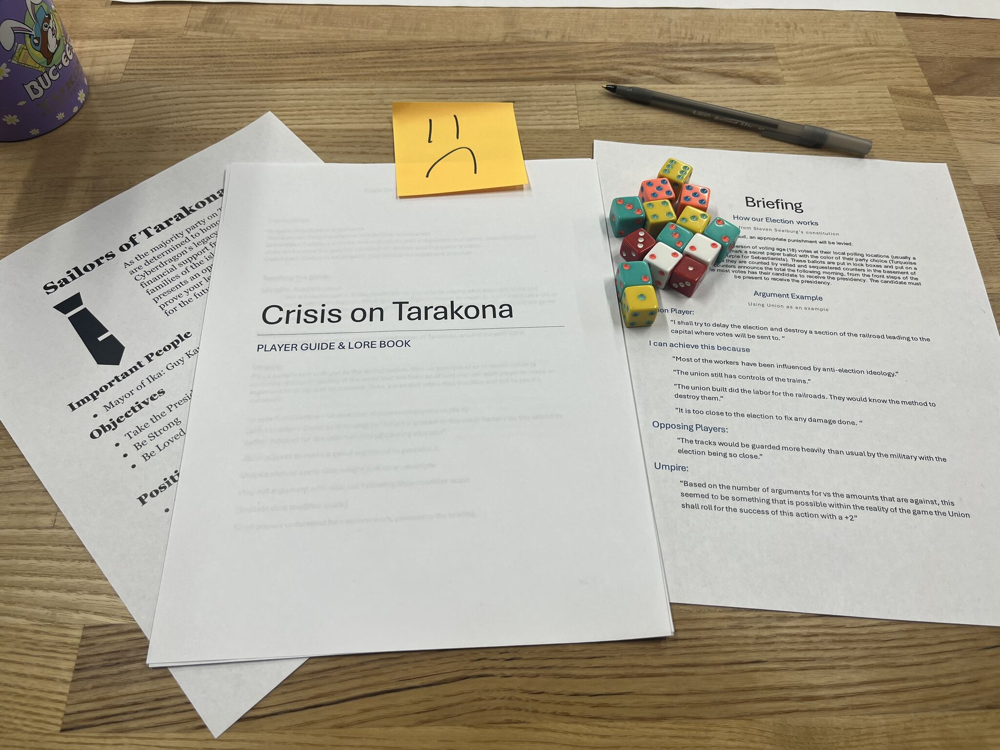
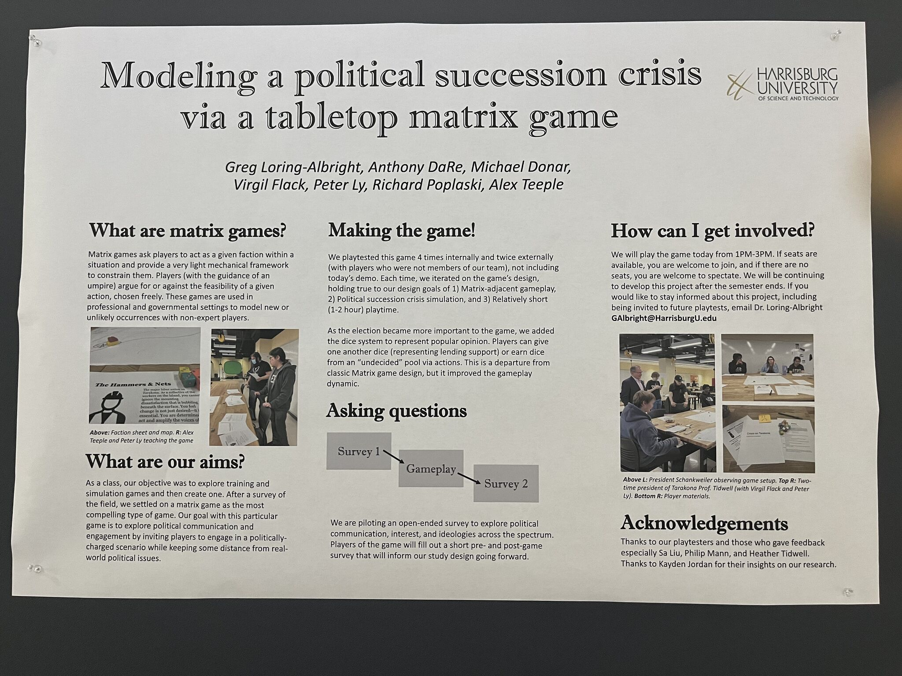

Taking the opportunity to work on a unique project outside of my field, I encountered new challenges that tested and expanded my UX skills within the world of professional wargaming.

Crisis On Takodana Matrix game session in progress
Looking to branch out during my second-to-last semester, I joined a special topics class focused on games and simulations. Despite being a UX student in a room full of game designers, this experience opened my eyes to how research and user expression intersect in complex wargaming formats.
The central challenge was to utilize wargaming formats to educate players on complex and often uncomfortable political topics through gamification.
We utilized the Matrix Game format to help students understand how political crises spiral out of control. As described by Tom Mouat: “In a Matrix Game, you simply explain why something should happen, the Umpire determines the likelihood, and you roll a die.” This allows for high user expression and freedom.
In the early stages, my primary role was world-building, where I helped create the fictional setting and lore of the nation of Takodana. Once the narrative foundation was set, I moved into developing technical deliverables.
I proposed and designed a player guide as an essential learning tool. This booklet bridged the gap between lore and mechanics, making the Matrix Game rules accessible to new players.
Using Figma, I designed the digital game board. We prioritized a digital format over physical to ensure the game was easily distributable and accessible for remote or local play.

Research Symposium Poster
Through iterative testing, our team identified usability issues that led to crucial redesigns, ensuring a low entry level while maintaining player freedom.
On a personal level, this project is being developed into an academic paper. I discovered a passion for applying UX research to highly technical, non-traditional fields like professional simulation.